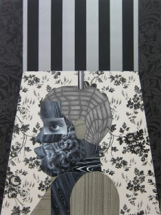
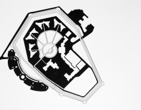
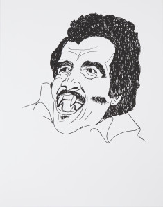
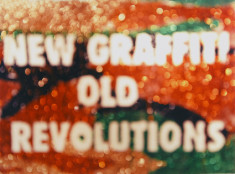
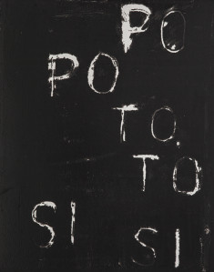
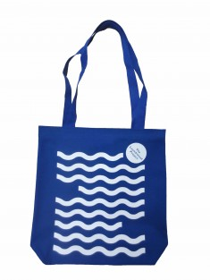

Purchase a special edition LP print or tote bag. Our special editions were created by some of New York’s most awesome contemporary artists. All sales support The LP’s general operations and allow us to continue turning oft drab coinops into joyful spaces of creativity and community!
SHIPPING & HANDLING
$30 for special edition prints
$3 for tote bags
Featured
CEDAR (A), 2015
Buy Now
Xaviera Simmons
Digital C-print
16 x 20 in
Edition of 20
Courtesy of the Artist
$1,500
Special Edition Prints
SHADE, 2014

Edition #'s available
6-10 $1,500.00 USD
Buy Now
Derrick Adams
Digital C-print
18 x 24 in
Edition of 20
Courtesy of the Artist
$1,500 and up
POST-WHITE, 2012
Buy Now
Dread Scott
Serigraph print
11 x 14 inches
Edition of 25
Courtesy of the Artist
$1,000
MASTER PLAN 3, 2012

Buy Now
Kenya (Robinson)
Serigraph print
11 x 14 inches
Edition of 20
Courtesy of the Artist
$250
BLACULA, 2009

Buy Now
Rudy Shepherd
Serigraph print
11 x 14 inches
Edition of 20
Courtesy of the Artist
$250
NEW GRAFFITI OLD REVOLUTIONS, 2010

Buy Now
Jayson Keeling
Digital C-print
11 x 14 inches
Edition of 20
Courtesy of the Artist
$250
POTOSÍ, 2012

Buy Now
Ronny Quevedo
Serigraph print
11 x 14 inches
Edition of 25
Courtesy of the Artist
$250
Tote Bags
THE LP “WAVE” TOTE

Buy Now
Tote bag